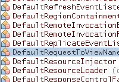
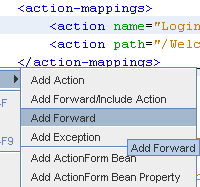

Java EEおよびWebアプリケーション開発

Webブラウザ、モバイル・デバイスなど、幅広い種類のクライアントからアクセスできる標準ベースのWebアプリケーションやエンタープライズ・アプリケーションを作成できます。何も設定しなくても圧倒的な開発を体験できます。すべての関連Java EEテクノロジのサポートを使用して、数回のクリックでJava EE 7、Java EE 6およびJava EE 5ベースのアプリケーションを作成できます。同時に、HTML5 Web開発のサポート・ページの説明のような、HTML5、JavaScriptおよびCSS3開発のためのIDEの包括的サポートも利用できます。

エンタープライズ・アプリケーション開発
NetBeans IDEは、最新のJava EE 7仕様のサポートを提供します。Webページ、サーブレット、Webサービス、Enterprise Java Beans、JSF、JPA、コンテキストと依存性の注入(CDI)のサポートなどのコンポーネントを開発できます。
NetBeansでのJava EEサポート

デプロイ、デバッグ、モニターおよびプロファイリング
作成したアプリケーションをGlassFish、WebLogic、Tomcat、またはJBossサーバーにデプロイできます。「保存時にデプロイ」機能を使用すると、エディタでファイルを保存した後すぐに、アプリケーションへの変更を反映できます。
また、JavaファイルまたはJSFファイルでブレークポイントを配置してアプリケーションをデバッグしたり、NetBeansプロファイラでそれをプロファイルしたりできます。また、WebサーバーでのJSF実行およびサーブレット実行からのデータ・フローの問題を診断できるHTTPサーバー側モニターもあります。

Webサービス開発
NetBeans IDEは、より最新のJava EE 7およびJava EE 6仕様からより古いJava EE 5以下の仕様まで、Webサービス標準をサポートしています。
ウィザード・ベースのコード生成やエディタ内コード挿入などの機能を使用してWebサービスを作成し、消費することができます。このエディタのコード補完機能には、Webサービスで使用できる注釈も含まれます。
NetBeansでのWebサービス・サポート

Webアプリケーション開発
NetBeans IDEでは、JSF 2.2 (Facelets)、JSP、サーブレットのいずれかを使用して、Java EEベースのWebアプリケーション・プロジェクトを簡単に作成できます。また、その他のフレームワーク(Spring、Struts、Hibernateの各フレームワークなど)を使用してWebアプリケーションを作成し、使用することもできます。エディタでは、コード補完、ナビゲーション、およびマッピング・ファイルのためのリファクタリングがサポートされています。
さらに、入手可能になった追加のプラグインを更新センターからインストールすれば、IDEが他のフレームワークと連携するように簡単に構成できます。
Webフレームワークのサポートの追加
Springのサポート |
Strutsのサポート |
Hibernateのサポート |
|
 |
 |
|

関連項目
- 最新の安定版リリースの主な機能のリストについては、NetBeans IDE 8.1リリース・ページを参照してください。
- 作業を開始する際に役立つチュートリアルについては、「Java EEおよびJava Webの学習」を参照してください。